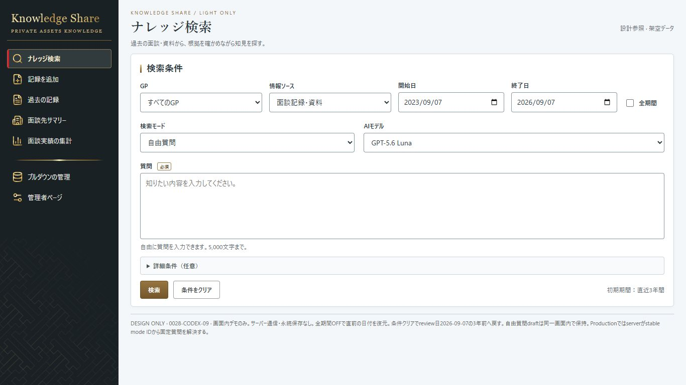
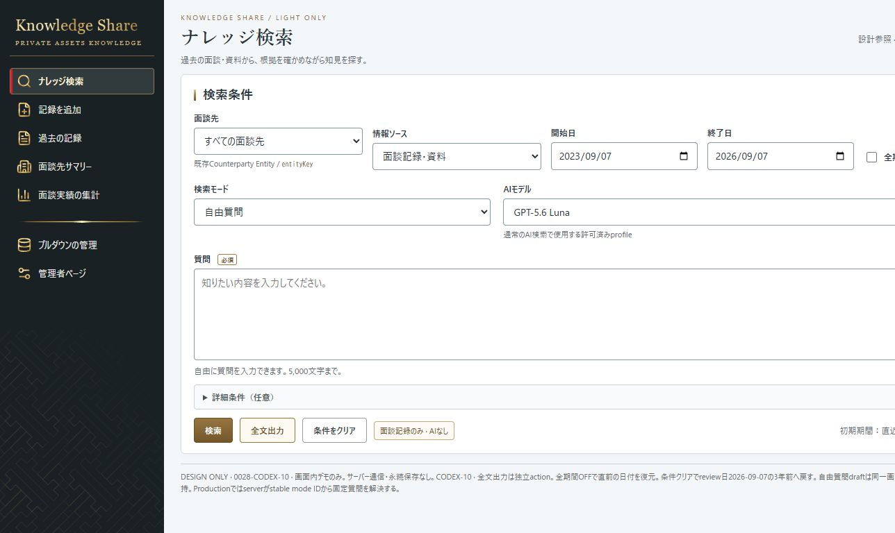
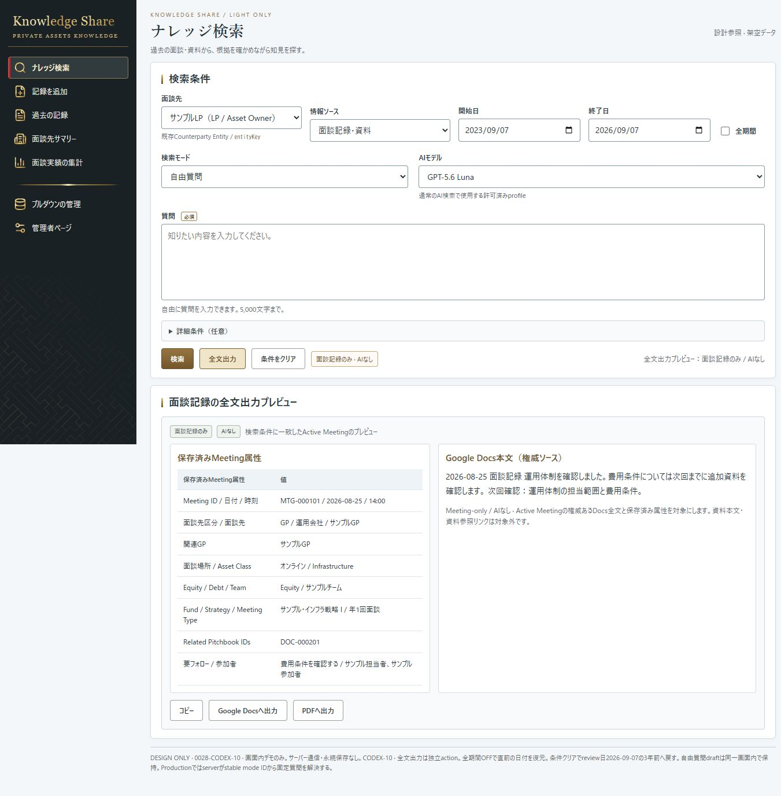

同一1366×768 viewport。BaselineはCODEX-09、右はCODEX-10初期表示。既存Light familyを保ったまま、面談先と独立全文出力actionを比較する。

GP selector / normal search action

面談先 entity selector / 検索・全文出力・条件をクリア

Meeting attributes + Google Docs本文。AI model selector remains independent。